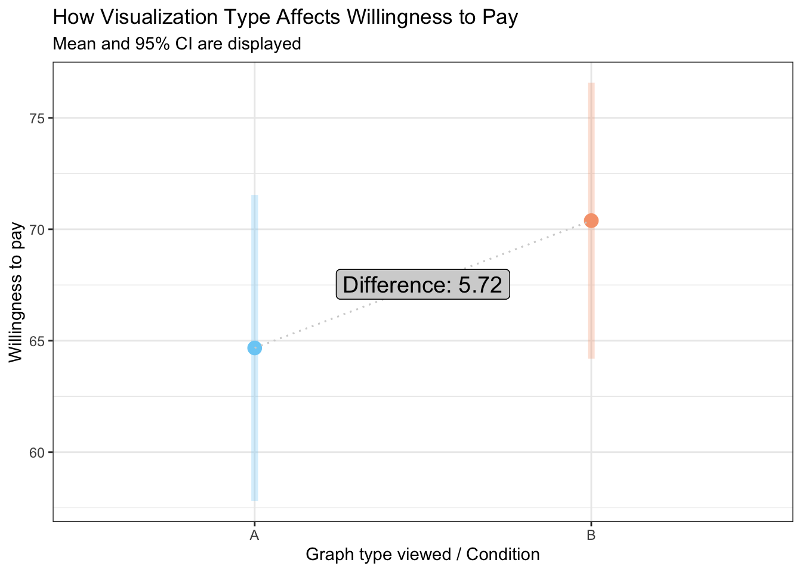
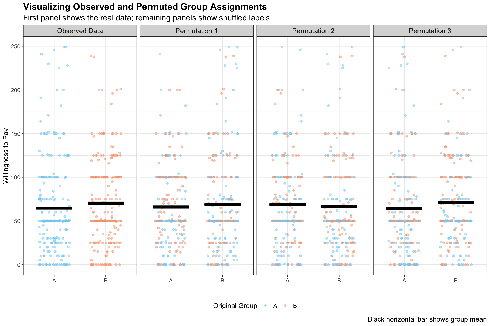
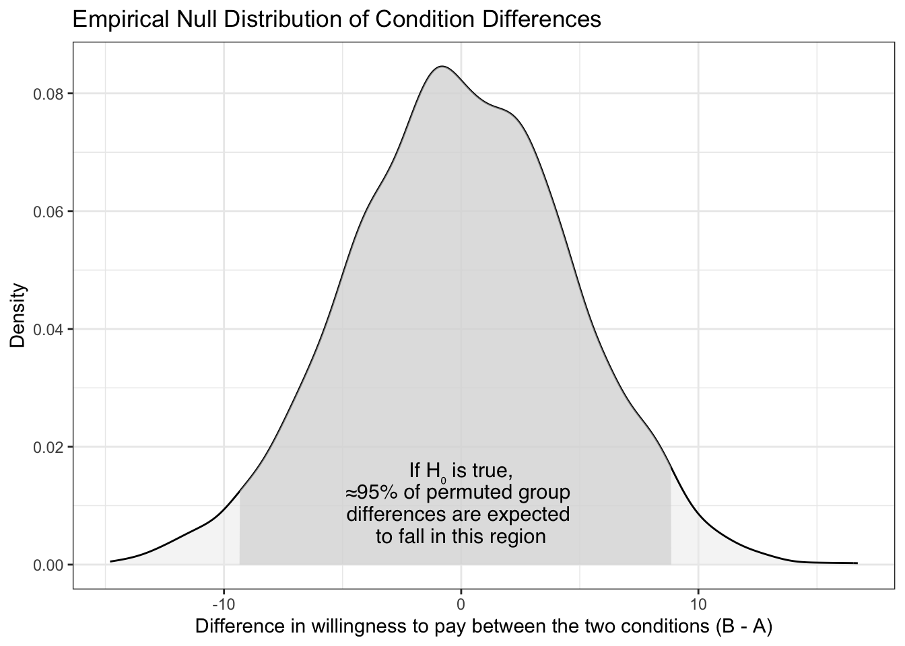
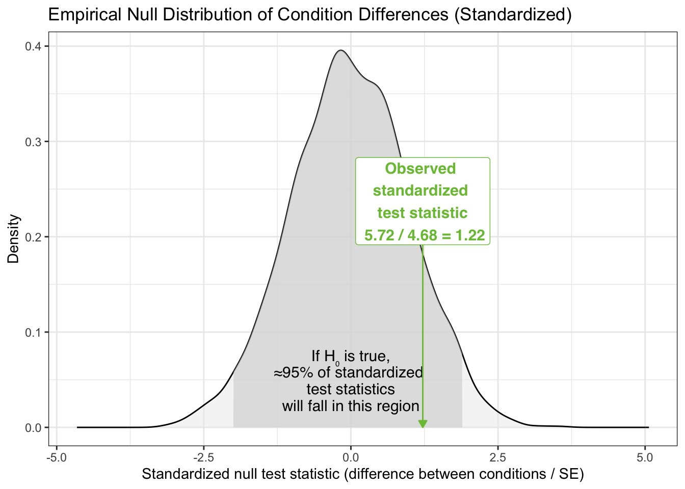

Null Hypothesis Significance Testing Via Permutation Tests
A WebR Tutorial

The scenario
In this activity, we will work with data from a study conducted by Drs. Jake Hofman, Daniel Goldstein & Jessica Hullman.

In the experiment, participants were told they were athletes competing in a boulder sliding game against an equally skilled opponent named Blorg. The objective was to slide a boulder farther on ice than their opponent to win a 250 Ice Dollar prize, awarded to the contestant with the longest slide. They had the option to rent a “special boulder” — a potentially advantageous (but not guaranteed) upgrade expected to improve their sliding distance in their final competition. Participants then saw a visualization with statistics comparing the standard and special boulders. After studying the randomly selected visualization, the participants indicated how much they would be willing to pay for the special boulder and estimated their probability of winning with it.
Participants were randomly assigned to see one of the following visualizations that they could use to decide how much to pay for the special boulder and how certain they were that it would help them win. These four visualization types are shown below:

The conditions, moving from left to right, are described as:
- A 95% Confidence Interval (CI)
- A 95% Prediction Interval (PI)
- A rescaled 95% CI (CI_rescaled, i.e., the y-axis is rescaled to have the same range as the PI graph)
- Hypothetical Outcomes Plots (HOPS), which show uncertainty through a series of animated frames that depict samples from underlying distributions.
Additionally, participants were randomly assigned to see either a small effect (probability of winning with the special boulder = 0.57, where 0.5 indicates even odds) or a large effect (probability of winning with the special boulder = 0.76). In this activity, we’ll focus on the participants who were randomly assigned to see visualizations depicting a large effect size.
We’ll consider two variables in this activity:
graph_type provides the type of graph the participant viewed — this is the randomly assigned condition. The types are called CI, PI, CI rescaled, and HOPS (corresponding to the descriptions above).
The outcome that we will consider here is called wtp_final. It represents the amount of money (in Ice Dollars) that the participant reported they would pay to rent the special boulder.
Graph the results
The graph below shows the average willingness to pay for the special boulder in each visualization condition, with 95% confidence intervals to reflect variability.
In this graph:
Each point shows the sample mean willingness to pay for the special boulder in each visualization condition.
Error bars represent 95% confidence intervals for the group means. They provide a sense of the precision of our estimates — narrower bars indicate more precise estimates.
Goal of this activity
In this activity, we will investigate whether the average willingness to pay for the special boulder differs between two visualization conditions (e.g., CI vs. PI).
You will:
Select two conditions and calculate the observed difference in mean willingness to pay.
Evaluate how unusual that difference is under the null hypothesis that there is no true effect.
By the end of this activity, you’ll interpret the resulting p‑value and gain intuition for deciding whether an observed difference likely reflects real group differences or is simply due to chance.
What is a permutation test?
When we run a statistical test, we want to know if an observed difference—like how much more students are willing to pay for the special boulder in one condition versus another — is just random chance or reflects a real effect.
A permutation test answers this by showing what the data would look like if there were no real difference between the conditions. We do this by repeatedly shuffling the group labels in the dataset. Each time we shuffle:
We reassign each participant’s willingness to pay to a random condition.
We recalculate the mean difference between conditions.
Repeating this many times gives us a null distribution: the differences we’d expect purely by chance if the null hypothesis were true. Finally, we compare our observed difference to this null distribution. If it falls far into the tails—much larger or smaller than what we’d expect by chance—it suggests the difference is unlikely to be random and may reflect a genuine effect.
To see an example, let’s perform one shuffle.
# shuffle data
shuffled_groups <-
df |>
mutate(shuffled_group = sample(graph_type))
shuffled_groups# A tibble: 910 × 3
graph_type wtp_final shuffled_group
<fct> <dbl> <fct>
1 HOPS 50 CI rescaled
2 HOPS 25 HOPS
3 PI 50 CI rescaled
4 CI 50 CI rescaled
5 CI 50 PI
6 HOPS 50 CI
7 HOPS 150 PI
8 CI 11 HOPS
9 CI 50 CI rescaled
10 HOPS 20 CI
# ℹ 900 more rowsNotice that the data frame now has the “real condition” (graph_type) and a randomly shuffled condition (shuffled_group).
We need many shuffled datasets to accurately assess how unusual our observed difference is.
In a permutation test, we don’t rely on a single shuffle. Instead, we repeatedly shuffle the group labels — thousands of times. For each shuffle, we:
Randomly reassign participants to groups.
Calculate the mean willingness to pay for each shuffled group.
Record the difference between the shuffled group means.
Repeating this process produces a null distribution of mean differences — what we’d expect to see purely by chance if the null hypothesis were true. Comparing our observed difference to this null distribution shows whether it’s likely due to random variation or reflects a real effect.
The graph below recreates the earlier plot using 5,000 shuffled datasets. It displays the observed group means along with their variability under repeated random shuffles. While the error bars in the previous graph summarize the uncertainty around our observed group means (i.e. the familiar 95% confidence intervals), this plot shows what those group means would look like if there really were no effect. Here, each point is the average willingness‐to‐pay from one of 5,000 random reassignments of labels, and the shaded bands mark the central 95% region of that null distribution. In other words, these “permutation intervals” visualize the range of mean differences we’d expect purely by chance under the null hypothesis.

As expected, the shuffled groups show almost no difference in willingness to pay, reflecting that random reassignment does not create a real effect.
Conduct a null hypothesis significance test using a permutation test
Let’s use the permutation test approach to determine if there is a significant difference in willingness to pay for the special boulder between two selected groups.
Import the data
Please click Run Code on the code chunk below to import the data.
df <- read_csv("data/uncertainty_exp2.csv") |>
filter(effect_size == "Large effect size") |>
select(graph_type, wtp_final) |>
drop_na() |>
mutate(graph_type = factor(
graph_type,
levels = c("CI", "PI", "CI rescaled", "HOPS")
))
df |> head(n = 10)# A tibble: 10 × 2
graph_type wtp_final
<fct> <dbl>
1 HOPS 50
2 HOPS 25
3 PI 50
4 CI 50
5 CI 50
6 HOPS 50
7 HOPS 150
8 CI 11
9 CI 50
10 HOPS 20Step 1: Choose two conditions to compare
First, choose two conditions to compare. The code below will assign one condition to be called Group A, and the other condition to be called Group B. By default HOPS and PI are compared, but you can change these to compare other groups.
- CI
- CI rescaled
- PI
- HOPS
The code also creates a dummy-coded variable to compare Group B to Group A (which we’ll use later in the activity).
Press Run Code to create the subsetted data frame for the investigation.
# input the names of the groups you'd like to compare
selection_1 <- "PI"
selection_2 <- "HOPS"
my_groups <-
df |>
filter(graph_type %in% c(selection_1, selection_2)) |>
mutate(
group = case_when(
graph_type == selection_1 ~ "A",
graph_type == selection_2 ~ "B"
),
group = factor(group, levels = c("A", "B")),
groupB = case_when(
group == "B" ~ 1,
TRUE ~ 0
)
) |>
select(wtp_final, group, groupB)
my_groups# A tibble: 470 × 3
wtp_final group groupB
<dbl> <fct> <dbl>
1 50 B 1
2 25 B 1
3 50 A 0
4 50 B 1
5 150 B 1
6 20 B 1
7 85 B 1
8 100 B 1
9 60 A 0
10 20 A 0
# ℹ 460 more rowsStep 2: Compute descriptive statistics
What is the average willingness to pay for the special boulder in each of your selected conditions?
Press Run Code on the code chunk below to compute the mean and standard deviation of willingness to pay for the special boulder in your selected conditions. The code also calculates the sample size of each group.
my_groups |>
group_by(group) |>
summarize(mean = mean(wtp_final),
sd = sd(wtp_final),
n = n())# A tibble: 2 × 4
group mean sd n
<fct> <dbl> <dbl> <int>
1 A 64.7 53.6 236
2 B 70.4 48.1 234What is the mean difference in willingness to pay between the two groups?
Press Run Code to calculate the difference in willingness to pay between these two groups.
# calculate the observed difference (Group B - Group A)
observed_diff <-
my_groups |>
group_by(group) |>
summarise(mean_value = mean(wtp_final)) |>
pivot_wider(names_from = group, values_from = mean_value) |>
mutate(observed_diff = B - A) |>
pull(observed_diff)
# format for reporting
cat("Difference between groups (B - A):",
sprintf("%.2f", observed_diff),
"\n")Difference between groups (B - A): 5.72 Last, let’s create a plot of the raw data. Press Run Code to visualize the distribution of willingness to pay for these two groups.
# calculate mean and 95% CI for each condition
df_summary <-
my_groups |>
group_by(group) |>
summarize(
mean_wtp = mean(wtp_final),
ci_low = mean_wtp - qt(0.975, df = n() - 1) * sd(wtp_final) / sqrt(n()),
ci_high = mean_wtp + qt(0.975, df = n() - 1) * sd(wtp_final) / sqrt(n())
)
# calculate the difference for annotation
observed_diff <- diff(df_summary$mean_wtp)
# calculate midpoint for label placement
midpoint_y <- mean(df_summary$mean_wtp)
# create plot
df_summary |>
mutate(
group_color = case_when(
group == "B" ~ "#f6a27b",
group == "A" ~ "#7bcff6"
)
) |>
ggplot(mapping = aes(x = group, y = mean_wtp, color = group_color)) +
# Confidence intervals
geom_linerange(
mapping = aes(ymin = ci_low, ymax = ci_high),
linewidth = 2,
alpha = 0.3
) +
# points
geom_point(size = 4, shape = 16) +
# difference annotation
geom_segment(
x = 1, xend = 2,
y = df_summary$mean_wtp[1], yend = df_summary$mean_wtp[2],
color = "lightgrey", linewidth = 0.5, linetype = "dotted"
) +
geom_label(
x = 1.5, y = midpoint_y,
label = sprintf("Difference: %.2f", observed_diff),
color = "black", fill = "lightgrey", size = 5
) +
scale_color_identity() +
labs(
title = "How Visualization Type Affects Willingness to Pay",
subtitle = "Mean and 95% CI are displayed",
x = "Graph type viewed / Condition",
y = "Willingness to pay"
) +
theme_bw() 
Step 3: State the null and alternative hypothesis
Null hypothesis: \(H_0: \mu_{\text{GroupA}} = \mu_{\text{GroupB}}\) (the two means are equal). Or equivalently: \(H_0: \mu_{\text{GroupA}} - \mu_{\text{GroupB}} = 0\) (the difference in means is zero)
Alternative hypothesis: \(H_a: \mu_{\text{GroupA}} \neq \mu_{\text{GroupB}}\) (the two means are not equal). Or equivalently: \(H_a: \mu_{\text{GroupA}} - \mu_{\text{GroupB}} \neq 0\) (the difference in means is not zero)
Step 4: Mimic the sampling distribution for the difference in group means under the null hypothesis
Using permutations, we can approximate the sampling distribution of the difference in willingness to pay between the two groups under the null hypothesis. Press Run Code to perform 5,000 permutations, calculating the mean willingness to pay for each shuffled group in every iteration.
# define number of permutations
n_permutations <- 5000
# create permutations
permutation_list <- replicate(n_permutations, {
my_groups |>
mutate(
original_group = group,
shuffled_group = sample(group)
) |>
select(wtp_final, original_group, shuffled_group)
}, simplify = FALSE)The graphic below shows how permutation works. The first panel displays the original data with the true group assignments, and the next three panels illustrate the first three shuffles of those assignments. Notice that after shuffling, the group labels no longer carry real meaning — any patterns that emerge are purely due to chance.
# add observed data as permutation 0
observed_df <- my_groups |>
mutate(
original_group = group,
shuffled_group = group,
permutation = 0
) |>
select(permutation, wtp_final, original_group, shuffled_group)
# combine observed + permuted
output <- bind_rows(
observed_df,
bind_rows(permutation_list, .id = "permutation") |>
mutate(permutation = as.integer(permutation))
)
# select a subset (observed + 3 permutations)
output_subset <- output |>
filter(permutation %in% 0:3)
# compute group means for crossbars
means <- output_subset |>
group_by(permutation, shuffled_group) |>
summarise(mean_wtp = mean(wtp_final), .groups = "drop")
# plot
output_subset |>
ggplot(mapping = aes(x = shuffled_group, y = wtp_final, color = original_group)) +
geom_jitter(alpha = .5, width = 0.3, height = 0) +
geom_crossbar(
data = means,
mapping = aes(x = shuffled_group, y = mean_wtp, ymin = mean_wtp, ymax = mean_wtp),
inherit.aes = FALSE,
width = 0.7,
color = "black",
linewidth = 1
) +
facet_wrap(nrow = 1, vars(permutation), labeller = labeller(permutation = c(
`0` = "Observed Data",
`1` = "Permutation 1",
`2` = "Permutation 2",
`3` = "Permutation 3"
))) +
scale_color_manual(
values = c(
"B" = "#f6a27b",
"A" = "#7bcff6"
)
) +
theme_bw() +
labs(
title = "Visualizing Observed and Permuted Group Assignments",
subtitle = "First panel shows the real data; remaining panels show shuffled labels",
caption = "Black horizontal bar shows group mean",
x = "",
y = "Willingness to Pay",
color = "Original Group"
) +
theme_bw() +
theme(
plot.title = element_text(size = 16, face = "bold"),
plot.subtitle = element_text(size = 14),
axis.title = element_text(size = 12),
axis.text = element_text(size = 10),
legend.text = element_text(size = 10),
legend.title = element_text(size = 12),
plot.caption = element_text(size = 12),
strip.text = element_text(size = 12),
legend.position = "bottom"
) 
Next, we’ll calculate the difference in mean willingness to pay between the two groups for every permutation. This value, which we’ll call null_diff, reflects the difference between the shuffled (randomized) group assignments in that permutation — not the real experimental conditions. Click Run Code to generate null_diff for all permutations
# turn list into a df
df_permutations <- permutation_list |>
# Compute group means for each permutation
lapply(function(df) {
df |>
group_by(shuffled_group) |>
summarise(mean_under_null = mean(wtp_final), .groups = "drop")
}) |>
bind_rows(.id = "permutation")
# compute mean difference in each permutation
mean_diff_permutations <-
df_permutations |>
pivot_wider(names_from = shuffled_group, values_from = mean_under_null) |>
mutate(null_diff = `B` - `A`) |>
select(permutation, null_diff)
mean_diff_permutations |> head(n = 10)# A tibble: 10 × 2
permutation null_diff
<chr> <dbl>
1 1 3.23
2 2 -2.87
3 3 6.52
4 4 4.43
5 5 7.76
6 6 -3.08
7 7 1.98
8 8 4.92
9 9 -5.00
10 10 7.73Now, we can visualize the expected difference in willingness to pay between the two groups under the null hypothesis.
# get central 95% cutoffs
q_lower <- quantile(mean_diff_permutations$null_diff, 0.025)
q_upper <- quantile(mean_diff_permutations$null_diff, 0.975)
# build a density data frame
dens_obj <- density(mean_diff_permutations$null_diff)
density_df <- data.frame(x = dens_obj$x, y = dens_obj$y)
# make the plot
mean_diff_permutations |>
ggplot(mapping = aes(x = null_diff)) +
# full density
geom_density(fill = "#ECECEC", alpha = 0.5) +
# shaded middle 95%
geom_area(
data = density_df |> filter(x >= q_lower, x <= q_upper),
mapping = aes(x = x, y = y),
fill = "#D4D4D4",
alpha = 0.6
) +
# annotation text
annotate(
"text",
x = 0,
y = max(density_df$y) * 0.125,
label = paste0("If H₀ is true,\n≈95% of permuted group \ndifferences are expected \nto fall in this region"
),
family = "sans",
size = 4,
lineheight= 0.9,
hjust = 0.5
) +
labs(
title = "Empirical Null Distribution of Condition Differences",
x = "Difference in willingness to pay between the two conditions (B - A)",
y = "Density"
) +
theme_bw()
Earlier, you calculated the observed difference in willingness to pay between your two selected conditions. Locate that value on the x‑axis of the null distribution and consider: How extreme is this difference compared to what we would expect if the null hypothesis were true?
Step 5: Query the permutations
Our goal is to answer:
In how many of the permuted samples is the calculated difference between groups as extreme (or more extreme) than our observed difference between groups?
What’s the intuition?
If the null hypothesis is true, there is no real difference in average willingness to pay between the two groups.
Any difference we see is purely due to chance.
By shuffling the group labels thousands of times, we create a null world where the true difference is zero.
Each permutation shows us a difference we might expect by random chance.
How do we measure extremeness?
Because we are not predicting which group should have the higher mean, we use the absolute value of the differences.
A permutation is considered “extreme” if its absolute difference is greater than or equal to the absolute observed difference.
What we’ll do:
Mark each permutation as “extreme” if the absolute difference in means is at least as large as the observed difference.
Count the extreme cases to determine the fraction of permutations that are as extreme or more extreme than what we observed.
Press Run Code to tally the number of extreme samples.
mean_diff_permutations <-
mean_diff_permutations |>
mutate(extreme_diff = case_when(abs(null_diff) >= abs(observed_diff) ~ "extreme",
TRUE ~ "not extreme"))
# tally the extreme versus not extreme permutations.
mean_diff_permutations |> count(extreme_diff)# A tibble: 2 × 2
extreme_diff n
<chr> <int>
1 extreme 1128
2 not extreme 3872>What proportion of the permuted differences are as extreme as our observed difference?
From our tally, we can compute the fraction of permutations where the absolute difference in means is at least as large as the observed difference between the real groups.
This fraction is our empirical p‑value — the probability of seeing a difference this extreme if the null hypothesis were true.
A small p‑value means that such an extreme result would be unlikely by chance alone, providing evidence against the null and suggesting a possible real difference between the groups.
# count extreme permutations (where |null_diff| ≥ |observed_diff|)
p_value <- mean(abs(mean_diff_permutations$null_diff) >= abs(observed_diff))
# format for reporting
cat(sprintf("p = %.3f (%.1f%% of %d permutations)",
p_value,
100*p_value,
nrow(mean_diff_permutations)))p = 0.226 (22.6% of 5000 permutations)Step 6: Compute the standard deviation of the null distribution
The standard error (SE) reflects how much the mean difference in willingness to pay would vary by chance due to random sampling.
In a permutation test, we can estimate this by calculating the standard deviation of the mean differences across all 5,000 shuffled datasets. This gives us the spread of differences we’d expect under the null hypothesis, showing the typical variation if there were no real effect.
Press Run Code to compute the standard error.
se <-
mean_diff_permutations |>
summarize(sd_null_dist = sd(null_diff)) |>
pull()
# format for reporting
cat("Standard Error (SE) (i.e., SD of null distribution):",
sprintf("%.2f", se),
"\n")Standard Error (SE) (i.e., SD of null distribution): 4.68 Step 7: Calculate a test-statistic
>How many standard errors away from zero is our observed difference between the two real groups?
To judge how unusual our observed difference is under the null hypothesis (which assumes no true difference), we calculate a standardized test statistic:
Take the observed difference in willingness to pay between the two groups (\(\bar{x}_B - \bar{x}_A\)).
Subtract the null hypothesis value (0).
Divide by the standard error from the permutation distribution.
This standardized value tells us how many standard errors the observed difference is from the null, which is the foundation for significance testing.
The formula for the standardized test statistic is:
\[ t = \frac{(\bar{x}_B - \bar{x}_A) - 0}{SE} \]
Press Run Code on the code chunk below to compute the standardized test statistic.
std_test_statistic = observed_diff/se
# format for reporting
cat("Standardized test statistic:",
sprintf("%.2f", std_test_statistic),
"\n")Standardized test statistic: 1.22 We can visualize where our observed standardized test statistic falls relative to the null distribution — the distribution of standardized differences we would expect if there were truly no difference between the groups.
The shaded middle region represents the 95% of null test statistics that are closest to zero. If our observed statistic lands far in the tails, it’s unlikely under the null hypothesis — exactly what a p‑value quantifies.
Press Run Code on the code chunk below to produce the graphic.
# observed standardized test statistic
std_test_statistic <- observed_diff / se
# null statistics standardized
std_mean_diff_permutations <-
mean_diff_permutations |>
mutate(std_null_diff = null_diff / se)
# central 95% cutoffs
q_lower <- quantile(std_mean_diff_permutations$std_null_diff, 0.025)
q_upper <- quantile(std_mean_diff_permutations$std_null_diff, 0.975)
# density data frame
dens_obj <- density(std_mean_diff_permutations$std_null_diff)
density_df <- data.frame(x = dens_obj$x, y = dens_obj$y)
# dynamically create observed label
label_df <- data.frame(
x = std_test_statistic,
y = max(density_df$y) * 0.6,
label = sprintf(
"Observed \nstandardized \ntest statistic\n %.2f / %.2f = %.2f",
observed_diff, se, std_test_statistic
)
)
# make the plot
ggplot(std_mean_diff_permutations, aes(x = std_null_diff)) +
geom_density(fill = "#ECECEC", alpha = 0.5) +
geom_area(
data = density_df |> filter(x >= q_lower, x <= q_upper),
mapping = aes(x = x, y = y),
fill = "#D4D4D4",
alpha = 0.6
) +
annotate(
"text",
x = 0,
y = max(density_df$y) * 0.125,
label = paste0("If H₀ is true,\n≈95% of standardized \ntest statistics\nwill fall in this region"),
family = "sans",
size = 4,
lineheight = 0.9,
hjust = 0.5
) +
annotate(
"segment",
x = std_test_statistic,
xend = std_test_statistic,
y = max(density_df$y) * 0.5,
yend = 0,
arrow = arrow(length = unit(0.2, "cm"), type = "closed"),
color = "#7bc043"
) +
geom_label(
data = label_df,
mapping = aes(x = x, y = y, label = label),
inherit.aes = FALSE,
fill = alpha("white"),
color = "#7bc043",
fontface = "bold",
family = "sans",
size = 4
) +
xlim(min(density_df$x) - 1, max(density_df$x) + 1) +
labs(
title = "Empirical Null Distribution of Condition Differences (Standardized)",
x = "Standardized null test statistic (difference between conditions / SE)",
y = "Density"
) +
theme_bw()
On this graph, the darker gray area of the sampling distribution under the null denotes the critical boundaries, marking the middle 95% of the distribution. The green line shows the calculated standardized test statistic for the difference in willingness to pay between the two conditions that you selected, measured in standard errors from the null hypothesis value (0 — i.e., no difference between groups).
If the green line falls within the darker grey area, we cannot reject the null hypothesis (we lack evidence that the group means differ).
If the green line is outside the darker grey boundaries, we can reject the null hypothesis (indicating a significant difference between groups). In this example, such a result would suggest that the data visualization shown to participants affects their perceived willingness to pay.
Can the null hypothesis be rejected for the comparison of your selected conditions?
Step 8: Test the hypothesis with an independent samples t-test
To test whether there’s a meaningful difference in means between two groups, we have two primary approaches: a non-parametric approach (e.g., the permutation test we just worked through) and a parametric/theory-based approach.
A two-sample t-test is a parametric approach, meaning it relies on certain assumptions about the data:
Normality: The sampling distribution of the difference in means should be approximately normal. This assumption is generally met if each group’s data is roughly normal or if the sample sizes are large enough (thanks to the central limit theorem).
Equal Variance: The variability (spread) in each group should be approximately equal.
If these assumptions are reasonable for your data, an independent samples t-test can be a powerful tool. Here’s how the t-test works:
Calculate the Mean Difference: First, we calculate the difference in means between the two groups.
Estimate the Standard Error: Using the sample standard deviations and sizes of each group, we estimate the standard error, which tells us how much we’d expect the means to vary just by chance.
Compute the t-statistic: The t-statistic measures how many standard errors the observed difference is from zero (our null hypothesis value, assuming no difference).
The formula for the t-statistic is:
\[ t = \frac{(\bar{x}_B - \bar{x}_A) - 0}{SE} \]
where:
\(\bar{x}_A\) and \(\bar{x}_B\) are the sample means for Groups A and B, respectively. The 0 subtracted in the numerator represents the null hypothesis value (i.e., no group difference).
\(SE\) is the standard error of the difference, calculated from the sample standard deviations and sample sizes of the groups. \(SE = \sqrt{\frac{s_A^2}{n_A} + \frac{s_B^2}{n_B}}\), where:\(s_A\) and \(s_B\) are the sample standard deviations for Groups A and B, \(n_A\) and \(n_B\) are the sample sizes for Groups A and B.
Press Run Code on the code chunk below to compute the test.
my_groups |>
t_test(wtp_final ~ group,
var.equal = TRUE,
order = c("B", "A"),
alternative = "two-sided")# A tibble: 1 × 7
statistic t_df p_value alternative estimate lower_ci upper_ci
<dbl> <dbl> <dbl> <chr> <dbl> <dbl> <dbl>
1 1.22 468 0.224 two.sided 5.72 -3.51 14.9Notice the similarity between the t-statistic that we created using the permutations and the t-statistic in the t_test output (labeled statistic). Also, notice the similarity between the p-value that we created using the permutations and the p-value in the t_test output (labeled p_value).
Tip
Here’s a breakdown of the code for the t_test() function in this context:
wtp_final ~ group: This formula indicates that we are testing the difference in the mean values of willingness to pay between the groups defined by group.var.equal = TRUE: This specifies that the variances of the two groups are assumed to be equal. If set to FALSE, the function would perform Welch’s t-test, which does not assume equal variances.order = c("B", "A"): This specifies the order in which the groups are subtracted. In this case, the mean of group A is subtracted from the mean of group B.alternative = "two-sided": This specifies that the test is two-sided, meaning we are testing if there’s a significant difference in means, regardless of the direction (either group A is greater than group B or vice versa).
Step 9: Test the hypothesis with a simple linear regression
We can equivalently specify the two sample t-test as a simple linear regression. Here, we regress willingness to pay on the dummy coded indicator designed to compare Group B to Group A.
slr <- lm(wtp_final ~ groupB, data = my_groups)
slr |> tidy(conf.int = TRUE, conf.level = .95)# A tibble: 2 × 7
term estimate std.error statistic p.value conf.low conf.high
<chr> <dbl> <dbl> <dbl> <dbl> <dbl> <dbl>
1 (Intercept) 64.7 3.31 19.5 1.68e-62 58.2 71.2
2 groupB 5.72 4.70 1.22 2.24e- 1 -3.51 14.9Notice that the independent sample t-test and the simple linear regression produce IDENTICAL results for the difference in willingness to pay between the two groups. A two sample t-test and a simple linear regression in which the outcome is regressed on a grouping variable are equivalent models — you obtain the same result. In the regression output, the intercept gives the estimated mean willingness to pay for Group A, and the coefficient for groupB represents the difference in means (Group B − Group A).
Wrap-up
Congratulations — you’ve now walked through a complete null hypothesis significance test using permutations, and you’ve seen how it aligns with traditional parametric methods. In this activity, you:
Explored and visualized the observed group means with 95% confidence intervals to see how participants’ willingness to pay varied by visualization type.
Built a null distribution by shuffling labels 5,000 times, creating “permutation intervals” that show what mean differences look like purely by chance under the null hypothesis.
Quantified extremeness by calculating the proportion of permuted differences at least as large as the observed difference — your empirical p-value.
Standardized the test statistic (difference ÷ null SD) to see how many “standard errors” away from zero your result lies.
Verified your findings with a parametric two‐sample t-test and an equivalent linear regression, confirming that all approaches yield the same conclusion when assumptions hold.
Key takeaways
Permutation tests make minimal assumptions: they simply ask “what would random chance produce?”
Parametric tests (t-tests, regression) rely on normality and equal‐variance assumptions but are often faster and more familiar.
When both methods agree, you can be confident in your inference; when they diverge, it’s a signal to examine your data and assumptions more closely.
Next steps
Try different comparisons. Repeat the analysis for other pairs of visualization types (e.g., CI vs. CI_rescaled) and compare effect sizes.
Vary the number of permutations. See how the stability of your p-value and null‐distribution estimates changes with 1,000, 10,000, or more replicates.
Explore one‐sided tests. If you have a directional hypothesis (e.g., HOPS will increase willingness to pay), adapt your permutation counting accordingly.
By contrasting observed‐data uncertainty (confidence intervals) with null‐model variability (permutation intervals), you’ve gained a deeper intuition for how p-values and other core statistics arise — and, crucially, you’ve de-mystified some of the most confusing concepts in statistics (like p-values) by actually seeing and calculating them via simulation. You now have a flexible, assumption-lean tool in your toolkit to assess group differences — and a clear understanding of how it connects to the familiar t-test and regression frameworks. Happy analyzing!